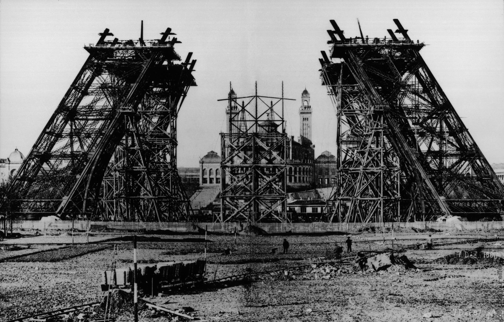

L'invention de la tour Eiffel
L'objet du concours lancé lors de l'exposition est d’« étudier la possibilité d’élever sur le Champ-de-Mars une tour de fer, à base carrée, de 125 mètres de côté et de 300 mètres de hauteur ». Choisi parmi 107 projets, c’est celui de Gustave Eiffel, entrepreneur, Maurice Koechlin et Emile Nouguier, ingénieurs et Stephen Sauvestre, architecte qui est retenu. Les deux principaux ingénieurs de l'entreprise Eiffel, Émile Nouguier et Maurice Koechlin, ont l'idée en juin 1884 d'une tour très haute, conçue comme un grand pylône formé de quatre poutres en treillis écartées à la base et se rejoignant au sommet, liées entre elles par des poutres métalliques disposées à intervalles réguliers. C'est une extrapolation hardie à la hauteur de 300 mètres -soit l'équivalent du chiffre symbolique de 1000 pieds- du principe des piles de ponts que l'entreprise maîtrise alors parfaitement. Eiffel prend le 18 septembre 1884 un brevet "pour une disposition nouvelle permettant de construire des piles et des pylônes métalliques d'une hauteur pouvant dépasser 300 mètres". Pour rendre le projet plus acceptable par l'opinion publique, Nouguier et Koechlin demandent à l'architecte Stephen Sauvestre de mettre en forme le projet.
Une première version bien différente Sauvestre habille les pieds de socles en maçonnerie, relie les quatre montants et le premier étage par des arcs monumentaux, place de grandes salles vitrées aux étages, dessine un sommet en forme de bulbe, agrémente l'ensemble de divers ornements. Le projet sera finalement simplifié, mais certains éléments comme les grandes arches de la base seront maintenus, contribuant à lui donner son aspect si caractéristique. La courbure des montants est mathématiquement déterminée pour offrir la meilleure résistance possible à l'effet du vent. Comme l'explique Eiffel : "Tout l'effort tranchant dû au vent passe ainsi dans l'intérieur des montants d'arête. Les tangentes aux montants menées en des points situés à la même hauteur viennent toujours se rencontrer au point de passage de la résultante des actions que le vent exerce sur la partie de la pile au-dessus des deux points considérés. Les montants avant de se réunir à ce sommet si élevé, semblent jaillir du sol, et s'être en quelque sorte moulés sous l'action du vent".